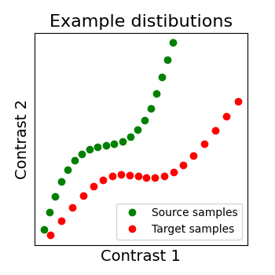
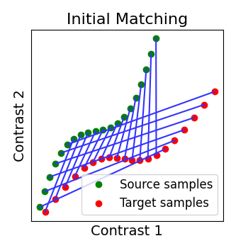
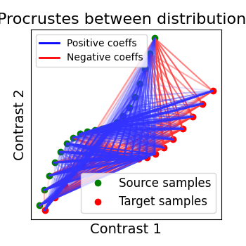
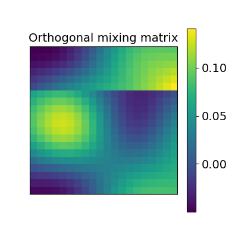
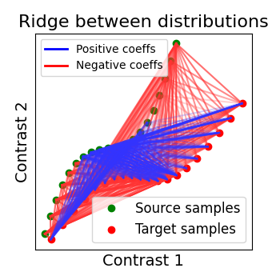
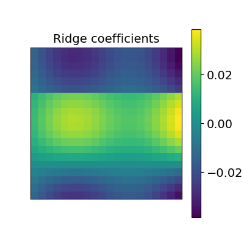
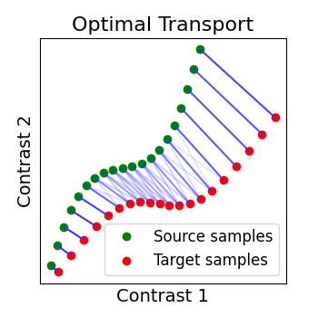
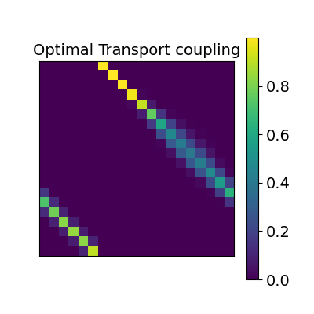

Note
Go to the end to download the full example code. or to run this example in your browser via Binder
Alignment on simulated 2D data.¶
As we mentionned several times, we search for a transformation, let’s call it R, between the source subject data X and the target data Y. X and Y are arrays of dimensions (n_voxels, n_samples) where each image is a sample. So we can see each signal as a distribution where each voxel as a point in a multidimensional functional space (each dimension is a sample).
We show below a 2D example, with 2 distributions: X in green, Y in red. Both have 20 voxels (points) characterized by 2 samples (images). And the alignment we search for is the matching of both distibutions, optimally in some sense.
To run this example, you must launch IPython via ipython --matplotlib
in a terminal, or use jupyter-notebook.
Defining utility functions¶
- In this example we will do a lot of plotting so we first define :
_rotate to do a 2D rotation for a point from an origin
_plot_mixing_matrix to plot 2D alignment matrix as pretty tables
tick_params which are a set of plotting parameters
_plot2D_samples_mat to plot 2D alignment matrix as matching between distributions.
_plot_distributions_and_alignment to plot both the distributions and the matchings
Now you can skip this part.
import math
import matplotlib.pyplot as plt
import numpy as np
from matplotlib.legend import Legend
from matplotlib.lines import Line2D
def _rotate(origin, point, angle):
"""Rotate a point counterclockwise by a given angle around a given origin."""
ox, oy = origin
px, py = point
qx = ox + math.cos(angle) * (px - ox) - math.sin(angle) * (py - oy)
qy = oy + math.sin(angle) * (px - ox) + math.cos(angle) * (py - oy)
return qx, qy
tick_params = {
"axis": "both",
"which": "both",
"bottom": False,
"top": False,
"left": False,
"labelleft": False,
"labelbottom": False,
}
def _plot_mixing_matrix(R, title=None, tick_params=tick_params):
plt.figure(figsize=(4, 4))
plt.imshow(R, interpolation="nearest")
plt.colorbar()
plt.tick_params(**tick_params)
plt.title(title)
def _plot2D_samples_mat(xs, xt, R, thr=1e-8, **kwargs):
"""Plot matrix R in 2D with lines for coefficients above threshold thr.
REPRODUCED FROM POT PACKAGE
"""
if ("color" not in kwargs) and ("c" not in kwargs):
kwargs["color"] = "k"
mx = R.max()
for i in range(xs.shape[0]):
for j in range(xt.shape[0]):
if R[i, j] / mx > thr:
plt.plot(
[xs[i, 0], xt[j, 0]],
[xs[i, 1], xt[j, 1]],
alpha=R[i, j] / mx,
**kwargs,
)
def _plot_distributions_and_alignment(
X, Y, R=None, thr=0.1, title=None, tick_params=tick_params
):
fig, ax = plt.subplots(figsize=(3.5, 3.5))
plt.plot(X[:, 0], X[:, 1], "og", label="Source samples")
plt.plot(Y[:, 0], Y[:, 1], "or", label="Target samples")
plt.legend()
if R is not None:
# if R has some negative coeffs, plot them too in red
if not (R >= 0).all():
_plot2D_samples_mat(X, Y, -R, thr=thr, c=[1, 0.2, 0.2])
colors = ["blue", "red"]
lines = [Line2D([0], [0], color=c, linewidth=2) for c in colors]
labels = ["Positive coeffs", "Negative coeffs"]
leg = Legend(ax, lines, labels, loc="upper left", fontsize=10)
ax.add_artist(leg)
plt.legend()
# Then plot R positive coeffs above a threshold in blue
_plot2D_samples_mat(X, Y, R, thr=thr, c=[0.2, 0.2, 1])
plt.rcParams.update(
{
"font.size": 12,
"ytick.labelsize": 14,
"xtick.labelsize": 14,
"axes.titlesize": 14,
"axes.labelsize": 12,
}
)
plt.xlabel("Contrast 1", fontsize=14)
plt.ylabel("Contrast 2", fontsize=14)
plt.tick_params(**tick_params)
plt.title(title, fontsize=16)
Create a sample distribution¶
First we generate a distribution that possess some geometrical information, a S shape. Here the dimension of our distributions will (n_points, 2) since we want to be able to plot each voxel in a point. In real cases however we have tens or hundreds of observations that characterize each point.
n_points = 20
origin_index = int(n_points / 2 - 1)
# We will make the S shape from a distorted sinusoid, with a translation and rotation
x = np.linspace(0, 20, n_points)
y = x + 3 * np.sin(x / 3)
# We make our source distribution from this with an additional rotation and translation
X = np.asarray(
[
_rotate((x[origin_index], y[origin_index]), (x_, y_), math.radians(10))
for x_, y_ in zip(x, y)
]
)
X[:, 0] -= 4
X[:, 1] += 4
# We make a target distribution Y as well
Y = np.asarray(
[
_rotate(
(x[origin_index], y[origin_index]), (x_, y_), math.radians(-10)
)
for x_, y_ in zip(x, y)
]
)
# Our to distributions : X in green and Y in red
_plot_distributions_and_alignment(X, Y, title="Example distibutions")
# We permutate its points to mimic functional variability. So now we have two
# distributions that seem to have some correspondance but are ill aligned.
Y = np.roll(Y, 6, axis=0)
# We plot them and observe that their initial matching is wrong
R_identity = np.eye(n_points, dtype=np.float64)
_plot_distributions_and_alignment(
X, Y, R=R_identity, title="Initial Matching", thr=0.1
)
- 
- 
Alignment : finding the right transform¶
The source and target distributions we created are not well matched. The idea of alignment is to find a transform, let’s call it R, between the source X and the target Y that will handle that. Now we will showcase on our simple 2D example different kind of transformation we can look for.
from fmralign.alignment_methods import (
OptimalTransportAlignment,
RidgeAlignment,
ScaledOrthogonalAlignment,
)
Orthogonal alignment¶
The first idea proposed in Haxby, 2011 was to compute an orthogonal mixing matrix R and a scaling sc such that Frobenius norm: math: ` | |sc RX - Y | | ^ 2` is minimized.
scaled_orthogonal_alignment = ScaledOrthogonalAlignment()
scaled_orthogonal_alignment.fit(X.T, Y.T)
_plot_distributions_and_alignment(
X,
Y,
R=scaled_orthogonal_alignment.R.T,
title="Procrustes between distributions",
thr=0.1,
)
_plot_mixing_matrix(
R=scaled_orthogonal_alignment.R.T, title="Orthogonal mixing matrix"
)
- 
- 
Ridge alignment¶
Another simple idea to regularize the transform R searched for is to penalize its L2 norm. This is a ridge regression, which means we search R such that Frobenius norm || XR - Y ||^2 + alpha * ||R||^2 is minimized with cross-validation.
ridge_alignment = RidgeAlignment(alphas=[0.01, 0.1], cv=2).fit(X.T, Y.T)
_plot_distributions_and_alignment(
X,
Y,
R=ridge_alignment.R.coef_,
title="Ridge between distributions",
thr=0.1,
)
_plot_mixing_matrix(R=ridge_alignment.R.coef_, title="Ridge coefficients")
- 
- 
Optimal Transport alignment¶
Finally this package comes with a new method that build on the Wasserstein distance which is well-suited for this problem. This is the framework of Optimal Transport that search to transport all signal from X to Y while minimizing the overall cost of this transport. R is here the optimal coupling between X and Y with entropic regularization. This way of finding a transform uses more geometrical information from the distributions.
ot_alignment = OptimalTransportAlignment(reg=0.1)
ot_alignment.fit(X.T, Y.T)
_plot_distributions_and_alignment(
X, Y, R=ot_alignment.R, title="Optimal Transport", thr=0.1
)
_plot_mixing_matrix(R=ot_alignment.R, title="Optimal Transport coupling")
- 
- 
Total running time of the script: (0 minutes 1.525 seconds)